| 日付 | 2012年2月4日（土） |
|---|---|
| 山域 | 房総 |
| メンバー | 家族（妻、長女・0歳） |
| 山行形態 | 子連れ日帰り |
| アクセス | 車 |
| ルート (Map) | 高照禅寺→御殿山（往復） 平群天神社→伊予ヶ岳（往復） 下貫沢出合→スイセンピーク→嵯峨山→釜ノ台農道→下貫沢出合 |
この季節はどこに行っても雪があるため、行ける山の選択肢がかなり少ない。
山に雪があるのはともかく、車でのアプローチが一番心配だ。
雪を避けて、温暖な房総半島の山を巡ることにする。
8:46 高照禅寺前駐車場到着。標高90m。
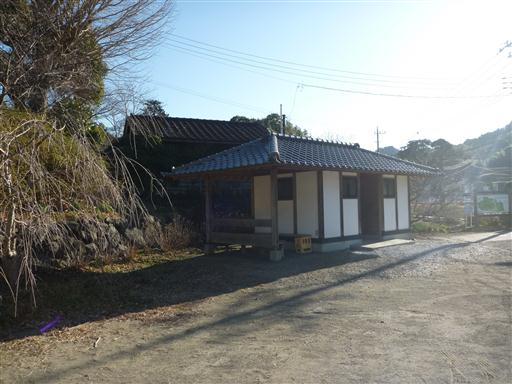
目の前に見える御殿山目指して車道を歩いていく。

暖かいはずの南房総だが、朝は冷えるのか霜が降りている。
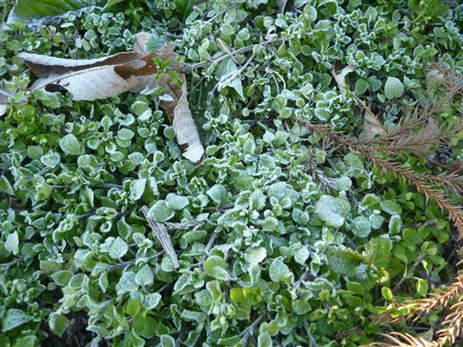
しばらく車道を歩くと登山道が始まる。
道はよく整備されていて遊歩道という感じだ。
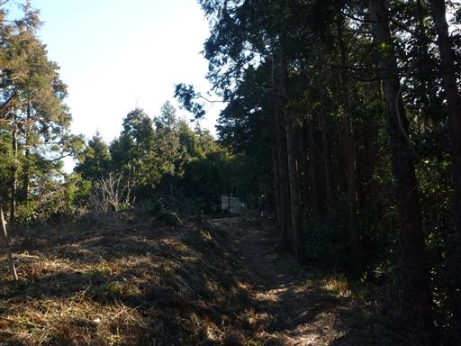
途中で大黒様が祀られている場所に出てくる。
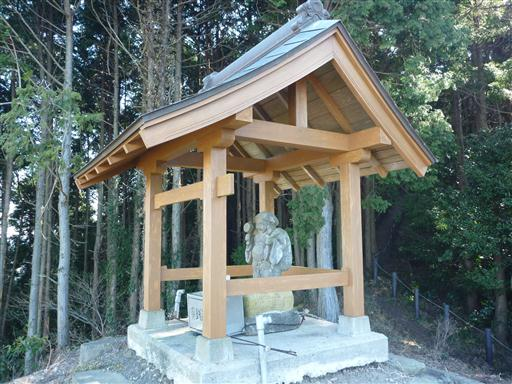
ここからは北側の展望が広がる。目の前にはゴルフ場が見えている。
房総半島はなだらかな山が延々と続いているため、ゴルフ場が非常に多い。
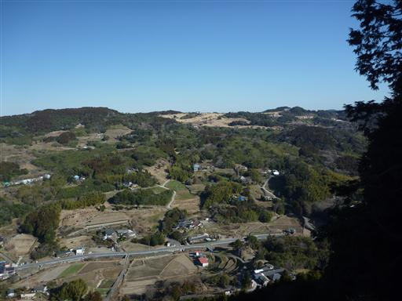
道の両側は鎖があって、整備が少々過剰だ。
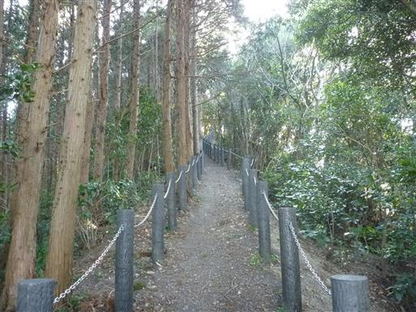
下山時に使おうと思っていた道との分岐点に到着。
こちらの道は地すべりのため通行止めになっている。
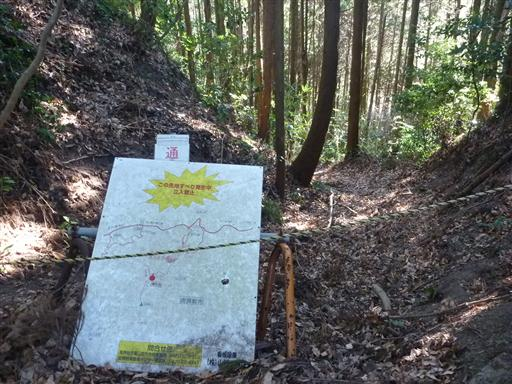
山頂直下に急坂が現れる。短い登りなのだが、なかなかきつい。
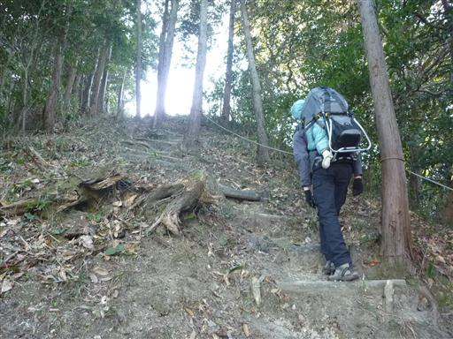
9:38 御殿山山頂到着。標高364m。
山頂にはマテバシイの大木が立っている。
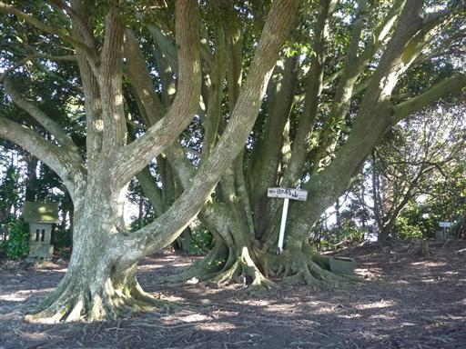
側には石祠が祀られている。
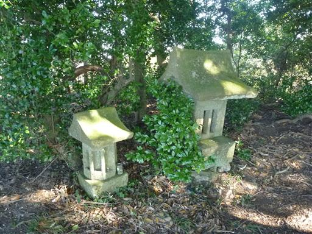
大木が林立するその奥にひっそりと三角点が埋まっている。
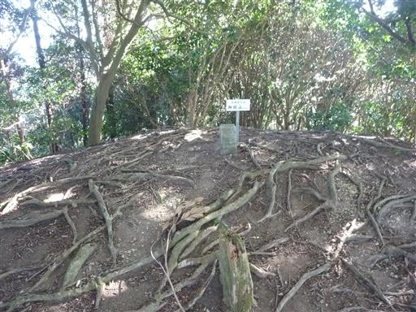
山頂に東屋が建っているので、座って少し休憩することにする。
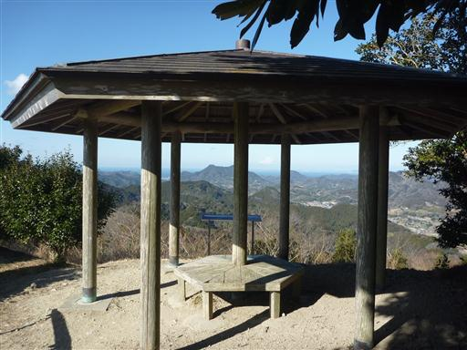
ここからは最高の展望が広がる。
左に富山、右に伊予ヶ岳、海の向こうには富士山が見えている。
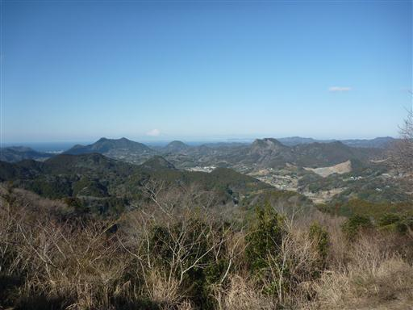
目を反対に投じると、太平洋が見える。
この山は房総半島のちょうど真ん中あたりに位置している。
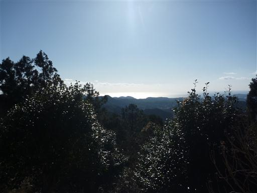
手持ちのガイドブックには載っていなかったが、山頂から先に大日山方面への登山道が続いている。
ぜひ歩いてみたくなる美しい道だ。
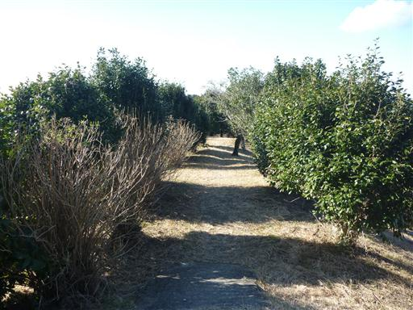
山頂は風が強くて寒かったので、早々に休憩を切り上げて下山することにする。
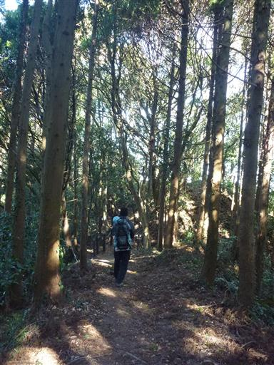
10:31 高照禅寺前駐車場到着。
側にある高照禅寺に立ち寄ってみたが、何の変哲もない寺だった。
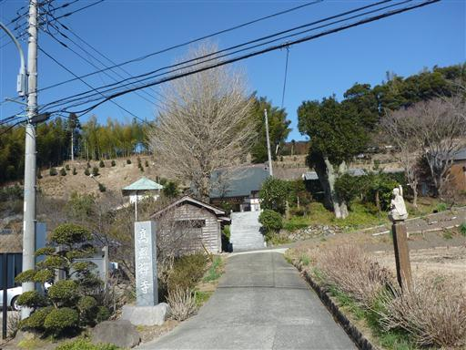
標高300mそこそこの御殿山だけでは物足りないので、次に伊予ヶ岳に向かう。
10:54 平群天神社到着。標高65m。
登山道入口付近には樹齢1000年と伝えられる夫婦クスの木が立っている。
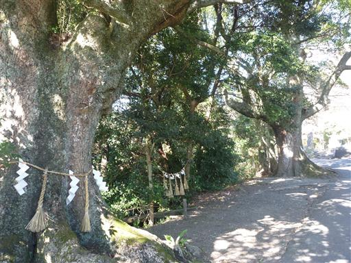
木の根もとに穴が開いている。
覗き込んでみたが内部は結構広そうで、トトロでも住んでそうな穴だ。
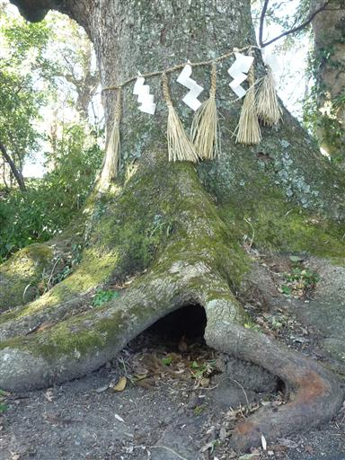
平群天神社にお参りして登り始める。
ここに来るのは5年ぶりで久々の訪問だ。
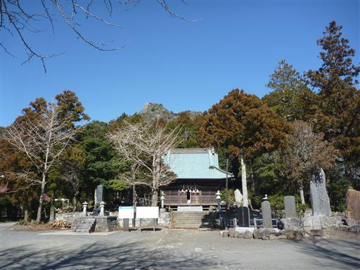
道端にオオイヌノフグリが咲いている。今年見る最初の春の花だ。
雑草扱いされているが、この花は結構好きだ。
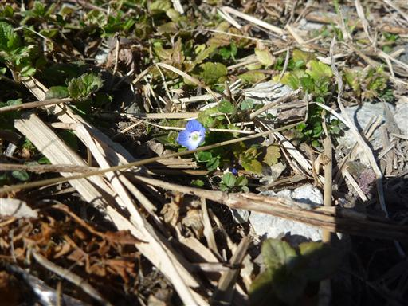
しばらく登ると展望が広がる。房総らしい低い山々が並んでいる。
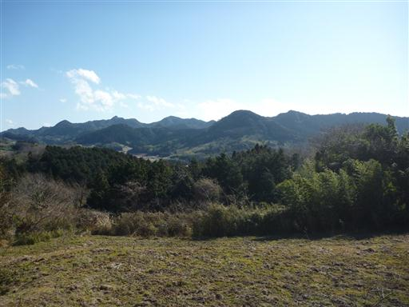
竹林が広がる。風が吹くと竹と竹がぶつかる音が聞こえてくる。
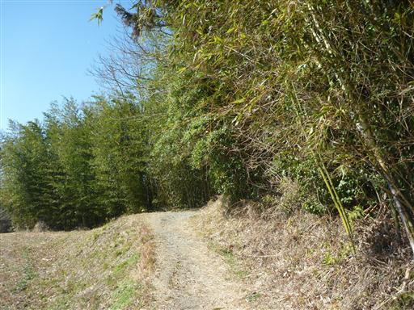
照葉樹林に包まれているこの山は冬でも緑色の葉が生い茂っている。
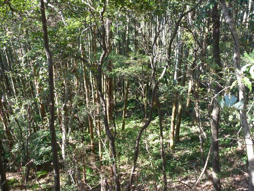
足元にタチツボスミレを発見。さすが南房総は春の訪れが早い。
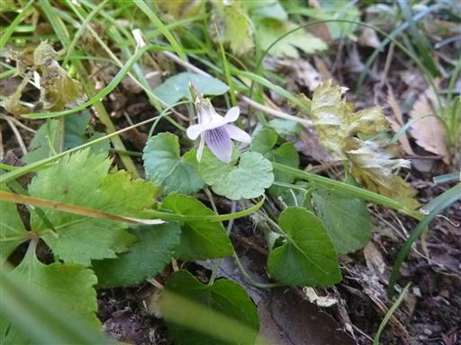
近くに富山が見えている。登るにはつまらない山なのだが形は非常に美しい。
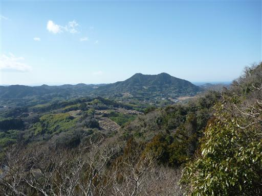
この山は安房の妙義山と呼ばれるだけあって急峻な地形をしている。
急な階段をどんどん登っていく。
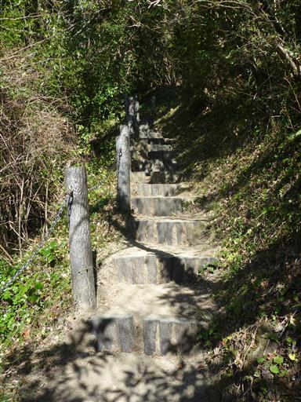
岩場に到着。ここからしばらく岩場が続く。
傾斜は比較的緩やかなのだが足元に砂が堆積していて登りにくい。
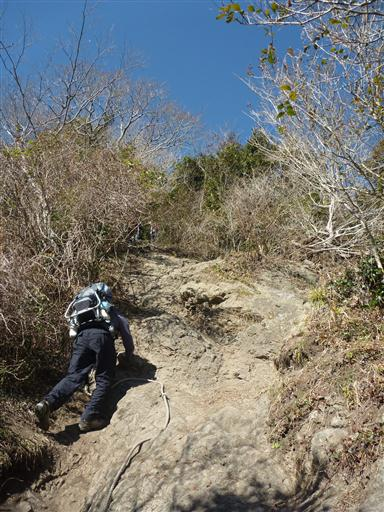
11:39 伊予ヶ岳山頂到着。標高337m。
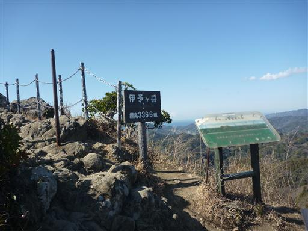
山頂が混雑していたので休まずに北峰を往復する。
特徴的な伊予ヶ岳の山頂部がよく見える。
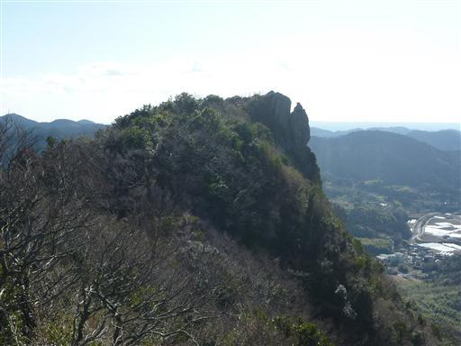
再び伊予ヶ岳に戻ってくる。山頂は360度の展望台だ。
真正面には先ほど登った御殿山が見えている。
幸い風が避けられるベンチとテーブルが空いていたので
ここで昼食休憩をとってから下山することにする。
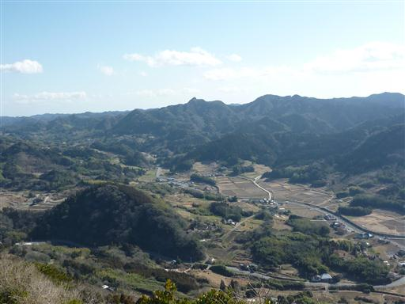
13:14 平群天神社到着。
今日は夕食をとってから帰る予定だったのだが、時間が早すぎるのでもう一山登ることにする。
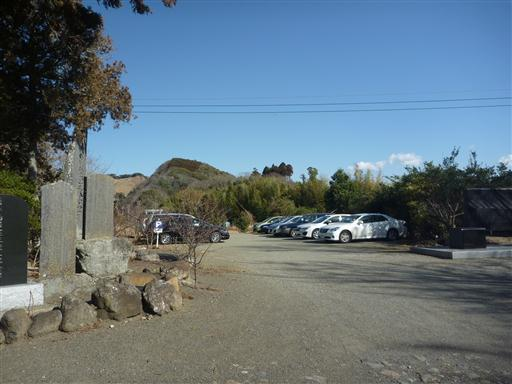
検討した結果、近くの嵯峨山に登ってみることにする。
この山は多くのスイセンが咲くことで知られている山で、今の季節だと満開のスイセンが見られそうだ。
嵯峨山に通じる車道を奥まで入っていくと途中で車を停められるスペースが見つかる。
13:49 下貫沢出合到着。標高50m。
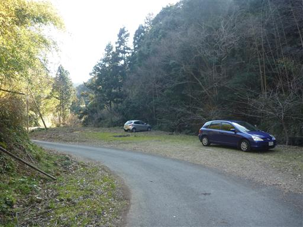
しばらく車道を歩いていく。結局もう少し奥にも車を停められるスペースはあった。
目の前に美しい里山の風景が広がる。
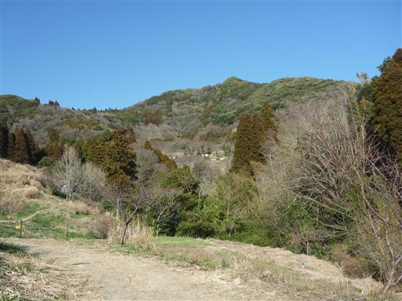
道端にスイセンの花が咲いている。いい香りだ。
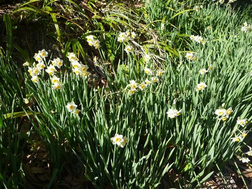
登山道の両脇をスイセンが埋め尽くしている。
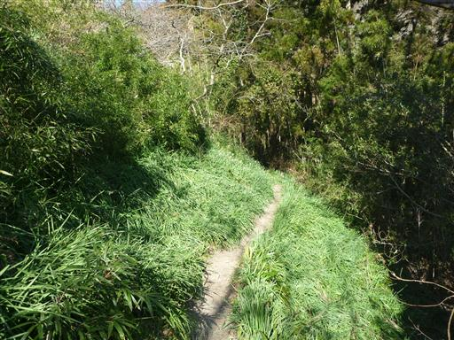
古い看板で作った壁。もう少しまともな資材はなかったのだろうか？
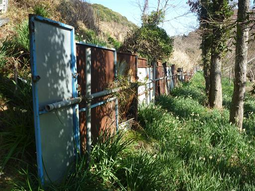
スイセンピークに到着。スイセンの咲く小さなピークだ。
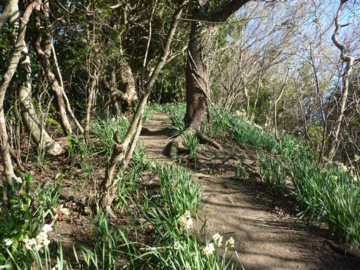
ここから嵯峨山まではスイセンが消え、やせ尾根が続く。
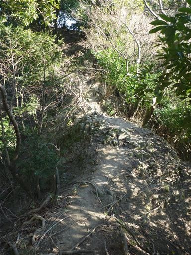
14:38 嵯峨山山頂到着。標高315m。
標識には315.49mと記載されているが1cm単位の精度とは恐れ入る。
小石一つで標高が変わりそうだ。
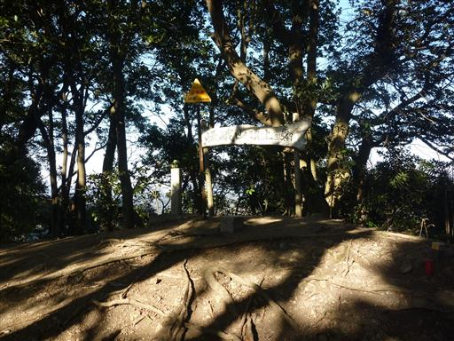
山頂からは全く展望がないが、美しい森に包まれている。
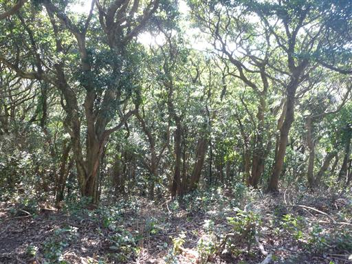
山頂からは来た道を戻らず、少し遠回りの周回コースを歩くことにする。
山頂から少し歩いたところに石祠が祀られている。
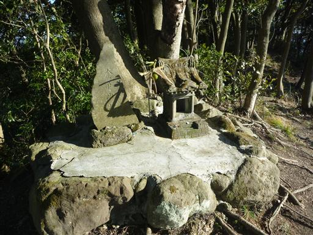
ここからは展望が開けて房総の山々を望むことができる。
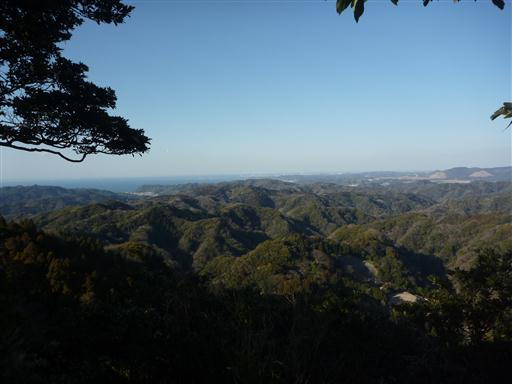
下山して車道に降り立つ。
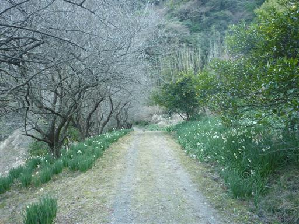
何軒かの民家が点在しているが、住んでいる人はいないようだ。
かなりの山奥で美しい場所なのだが住むには不便なのだろう。
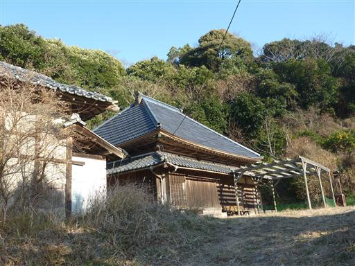
車道を離れて再び登山道に入り、峠を越える。
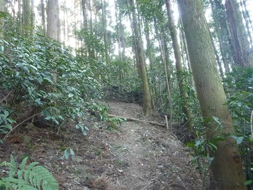
登りの時に使った道と合流する。
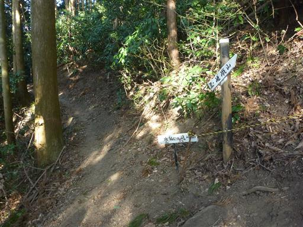
15:41 下貫沢出合到着。
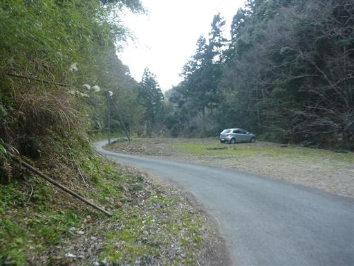
予定していた食事処ばんやに行く。ここに行くのは鋸山に登った時以来だ。
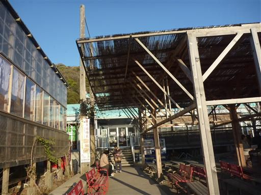
港の近くなので魚料理は新鮮でおいしい。
店を出るともう日が暮れかけている。
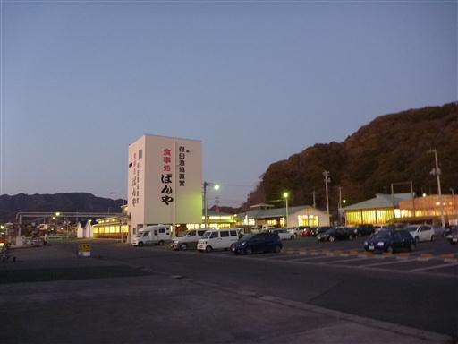
海の向こう側には富士のシルエットが見えている。
小さいながらも特徴的な山を3つ登り、充実した山行だった。